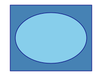
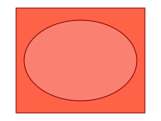

width=50% of vb(200) → 100pt, height proportional → 75pt
height=50% of vb(150) → 75pt, width proportional → 100pt
width=75% of vb(200)=150pt, height=100% of vb(150)=150pt

SVG width=50%→intrinsic 100×75; img width=200pt → run 200×150 (proportional)